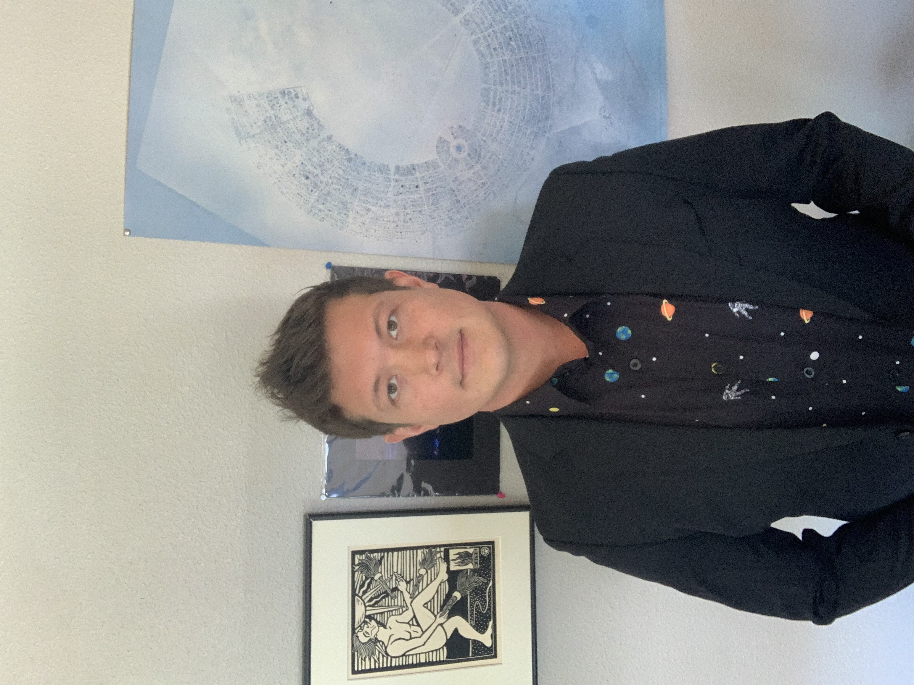

Foam-based pre-stabilization for non-cooperative orbital capture. The missing prerequisite for every downstream capture player in the ISAM value chain.
Capture is not one problem; it is a cascading chain of unsolved dependencies — characterization, pre-stabilization, universal capture, and post-capture stabilization. Every player downstream depends on the layer upstream. The chain breaks at pre-stabilization. We are building the missing prerequisite.
Live simulation of the full capture sequence. Step through detection, approach, foam deployment, stabilization, and controlled departure.
Working chemistry beats illustrated claims. The rocksicle demo is our crude-but-credible proof-of-concept: hard foam expanding around irregular, tumbling, mass-asymmetric targets — exactly the operational regime where rigid grapples and adhesives fail. The space-environment version expands isotropically in vacuum and microgravity. The behavior is the same. The physics scale up.

This is not a request to fund the future of asteroid mining. It is a request to fund the bounded, six-month TRL-4 validation campaign that produces the hard engineering data to prove the foam works as characterized — in vacuum, across operational thermal range, at the geometries and rotation rates real debris exhibits.
The deliverable is not a product. It is a defensible engineering record that converts “we believe” into “we measured.”
Debris removal is the wedge — not the destination. Each rung de-risks and credentials the next. The same foam that detumbles a derelict rocket body in LEO is the foam that captures a 30-meter asteroid in a heliocentric orbit a decade from now. We build heritage on debris and spend it on rocks.